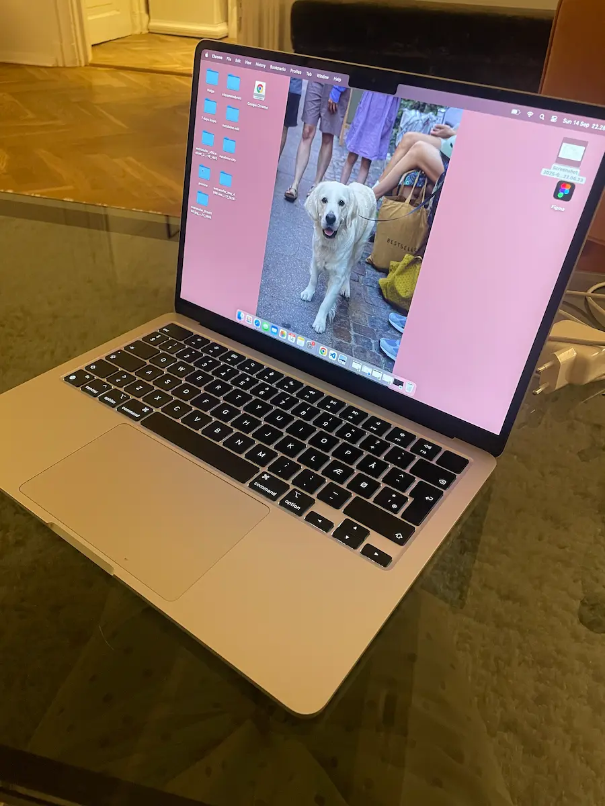

Min computer
Type
Sølv MacBook Air er en let og elegant bærbar fra Apple med høj ydeevne og lang batteritid. Perfekt til studie, arbejde og daglig brug.
Specifikationer
MacBook Air har en 13,6" Liquid Retina-skærm, Apple M2-chip, 8 GB RAM og 256 GB SSD-lager. Den vejer ca. 1,24 kg og har op til 18 timers batteritid samt MagSafe-opladning og to Thunderbolt/USB 4-porte.